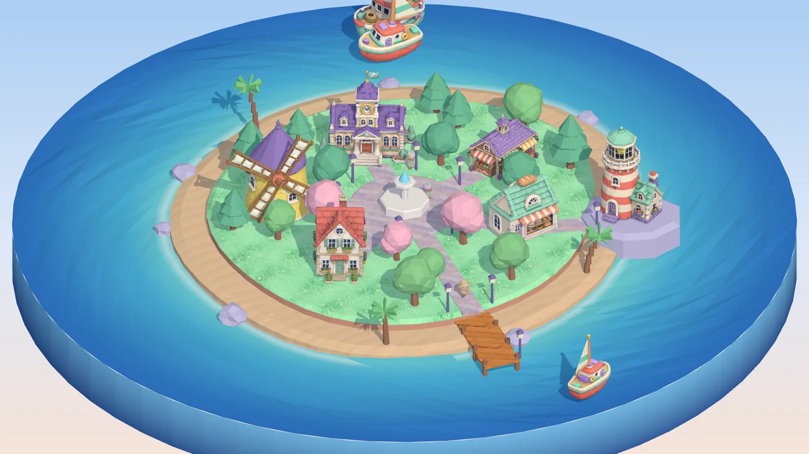

Scenario｜Island Builder：讓 AI agent 在 Blender 完成 3D 島嶼，再重建成可玩的 Three.js 體驗
一句話摘要
這不只是「AI 做了一張島嶼圖」，而是一個可檢視的製作鏈：概念圖生成、image-to-3D、Blender 場景與動畫、材質／聲音、AI 品質檢視、模型壓縮，最後以 Three.js 重建成可讓使用者配置建築與切換日夜的網頁小遊戲。
實際可玩的內容
Scenario 官方頁面提供一座低多邊形小島與六個空地。使用者可從 House、Bakery、Windmill、Market、Lighthouse、Town hall 中選擇建物後放進地塊，也可啟動自動建造、日夜模式與音效。頁面還可旋轉、縮放並逐一查看建物、船隻與新增村民的 3D 模型及其概念圖。
這種呈現方式很適合做為互動原型的參考：它把生成物從「一次性影片」變成使用者可以操作、比較與探索的體驗。

官方製作流程：從提示詞到 15 秒影片
Scenario 的 making-of PDF 記錄，原始影片由 Claude Opus 5.5 在一台 Mac 上以 headless 方式執行，搭配 Blender 5.2、Scenario Blender Plugin 與 Scenario MCP；它在一個工作階段中完成動畫、渲染與製作筆記。官方列出的成品設定包括：
- 15 秒、360 幀、24 fps 的連續正交鏡頭，使用 EEVEE 渲染。
- 64 分鐘的單次工作階段、44 次 Scenario 呼叫、帳務紀錄為 1,931.25 CU。
- 六棟建物與兩艘船由 GPT Image 2 先產生概念圖；Tripo 3.1 轉成有材質的 3D 網格，Hunyuan 3D 3.1 Pro 用於部分比較。
- 風車因一體成形模型把葉片與塔身黏在一起，改以概念圖編修拆成塔身與轉子，再為轉子找出軸心建立旋轉動畫。
- 建物被綁定到可替換的 asset slot；彈跳式 squash-and-stretch 動畫是做在 slot 上，因而能在不重做動畫的情況下替換模型。
這裡最值得借鏡的不是「一次提示詞就完成」，而是 agent 有明確的中間產物與驗收節點：概念、網格、場景、測試渲染、品質檢視、最終輸出，各階段都能保留可檢查的證據。
夜景效果的工程巧思
概念圖提示詞一開始就要求深海軍藍色玻璃窗。官方說明，夜景時以色彩鍵從生成材質中挑出符合色相、飽和度與亮度條件的像素，將它們轉成暖色發光；因此沒有另外人工繪製窗戶遮罩。
這是生成內容工作流的重要設計原則：在生成階段就植入後續可辨識、可控制的視覺特徵，能降低 3D 場景整合與互動效果的手工修補成本。不過這種顏色鍵方法會受生成材質品質影響，仍應以測試畫面檢查誤選與漏選。
從重型 3D 資產到網頁互動
官方案例稱原始每個生成模型約有 190 萬個三角形與 4096px 材質；經 Blender 簡化後，網頁版每個建物約 28,000 個三角形、1024px WebP 材質，並使用 Meshopt 與 glTF-Transform 壓縮。九個模型的整體載入量約 4.2MB。
這正是把 AI 生成 3D 從展示影片帶往可用 Web 體驗時，不能略過的一段：生成模型通常需處理面數、貼圖尺寸、壓縮與載入互動，不能直接假設原始模型適合瀏覽器。
Scenario Skills 與可重用性
Scenario 官方亦連結至開源的 [scenario-labs/skills](https://github.com/scenario-labs/skills) 儲存庫，採 MIT 授權。其 README 說明，這是一組供 Claude Code、Cursor、Codex、Copilot 等 AI coding agents 使用的 Agent Skills，可透過 Scenario MCP 產生影像、影片、音訊、材質、天空盒、3D 資產與自訂模型；另有操作 Blender、Maya、Unreal、Unity 等 DCC／引擎的專家技能。
Island Builder 頁面也提供專用 agent skill ZIP 下載。不過下載的 ZIP 是可執行工作流的輸入，不宜因展示頁面而直接信任或執行；實作前仍應審閱內容、確認 MCP 權限、模型／點數成本、檔案輸出位置及是否會控制本機 DCC 軟體。
給教學與創作的可複用框架
可把這個案例轉成一個較小、可教學的練習：
- 選定單一視覺風格與可驗收的場景規格，例如六個物件、固定鏡頭與日夜切換。
- 先產生概念圖，提示詞刻意保留可供 shader 辨識的特徵，例如特定窗色或材質區塊。
- 將少量物件轉為 3D，先做面數與材質大小預算，再整合進 Blender 或 Three.js。
- 把動畫綁在可替換的 slot 或 prefab，而不是綁死某一個模型。
- 建立可重複的品質門檻：構圖、物件穿插、光影、材質、效能、版權與品牌風險。
- 以壓縮後的 glTF／貼圖做 Web 測試，觀察實際載入時間與互動流暢度。
必須保留的界線
64 分鐘、44 次呼叫與 1,931.25 CU 是這個官方展示工作階段的紀錄，不是一般使用情境的保證或報價。模型選擇、帳戶權限、點數單價、硬體、網路、生成穩定度與人工審查都會顯著改變結果。
此外，案例中涉及 GPT Image、Tripo、Hunyuan、ElevenLabs 與 Scenario 的產品名稱與能力描述，皆依 Scenario 在展示頁與 PDF 的說法整理；實際可用模型、版本、授權、商用權利、API 條件與費用，應在開始專案前回到各供應商當期官方條款確認。
來源與證據
- [Scenario Island Builder 官方互動頁](https://www.scenario.com/explorations/island-builder/)
- [Scenario 官方 illustrated making-of PDF](https://iieqkinwjorxrzjp.public.blob.vercel-storage.com/explorations/1ffa8434053e9481b96094a9384aa8028bbc7a369bd55abeadc83e44f4c7cf4c/island-builder-making-of.pdf)
- [Scenario Agent Skills GitHub 儲存庫](https://github.com/scenario-labs/skills)
- 本站保存的第一方來源、PDF 擷取與圖片完整性資訊：`source-archive/2026-10-29-scenario-island-builder.json`